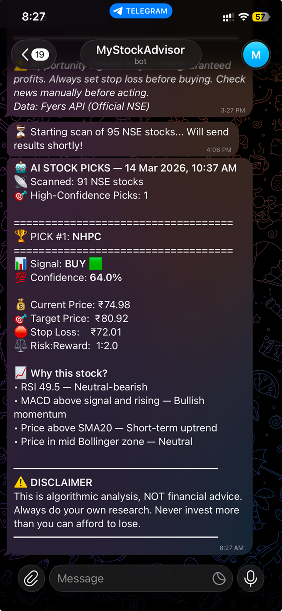

What is Stock Bot?
Stock Bot is a fully automated daily market scanner. Every morning at 8:00 AM, it scans 229 Indian stocks, evaluates them against a strict set of investing rules, and sends me a simple, highly scannable Telegram message with the best trading opportunities for the day.
Project Details
|
End-to-End Design Engineer |
Python, Fyers API, GitHub Actions, Telegram UI |
|
2 Weeks (Weekend Project) |
Conversational Interface / Plain Text |
Why did I need this in my daily life?
I built Stock Bot as a personal project to solve a daily frustration: the overwhelming amount of data in the Indian stock market. I needed a way to strip away the noise, remove the emotional stress of picking stocks, and find clear, high-probability setups before the market opened every morning.
What was the exact problem I was facing?
The Indian markets open at 9:15 AM. Trying to manually check the charts, moving averages, PE ratios, and news sentiment for hundreds of stocks before the opening bell is humanly impossible.
I needed the research done for me while I was still waking up.
What makes picking stocks so overwhelming?
Most financial platforms give you a firehose of raw data but very few actionable insights. On top of that, human emotion is the enemy of good investing. Without a strict, automated system, it’s too easy to make bad calls out of FOMO.
What did I discover?
I realized that smart investing is basically just following an algorithm. If I could translate the rules of a disciplined trader into Python code, I could completely offload the mental burden.
I also realized the output had to be incredibly constrained giving myself another chart heavy dashboard would just recreate the problem of data fatigue.
What are the actual benefits of this system?
Zero-Cost: It runs entirely on free APIs (Fyers, Screener.in, Google News) and GitHub Actions. Total cost: ₹0/month.
Time Saved: Automates hours of manual charting and fundamental research every single day.
Capital Protection: The bot algorithmically enforces a 5% maximum stop loss, protecting me from emotional trading mistakes.
What rules did I follow while building this?
Zero-Touch: The system must run completely on its own without me touching a keyboard.
Scannability: The final message must be readable in under 30 seconds on a mobile screen.
Transparency: The bot needs to show its confidence level so I trust its picks.
Patience: It is better for the bot to recommend zero stocks on a bad market day than to force a risky trade.
Graceful Failure: Financial APIs break. If the NSE earnings calendar blocks the bot, the system is designed to skip that specific check, flag a warning in the Telegram message, and still deliver the rest of the daily report seamlessly rather than crashing the whole script.
How does the bot actually work every morning?
The Automation Engine
name: Stock Bot — Daily Run
on:
schedule:
- cron: '30 2 * * 1-5' # 8:00 AM IST = 2:30 AM UTC, weekdays only
workflow_dispatch: # Manual trigger from GitHub Actions UI
jobs:
run-bot:
runs-on: ubuntu-latest
steps:
- name: Checkout code
uses: actions/checkout@v4This is the alarm clock for the bot. It tells the system to wake up exactly at 8:00 AM every weekday, scan the market, and send me the results without me ever having to open my laptop.
The Core Logic
def passes_hard_filters(daily_df: pd.DataFrame, weekly_df: pd.DataFrame) -> tuple:
"""Returns (passes: bool, reason: str)"""
if daily_df is None or len(daily_df) < MIN_CANDLES_DAILY:
return False, "Insufficient data"
close = daily_df["close"]
current = close.iloc[-1]
# Filter: Weekly trend not in clear downtrend
if weekly_df is not None and len(weekly_df) >= MIN_CANDLES_WEEKLY:
wc = weekly_df["close"]
w_sma10 = wc.rolling(10).mean().iloc[-1]
w_sma20 = wc.rolling(min(20, len(wc))).mean().iloc[-1]
if (wc.iloc[-1] < w_sma10 and
wc.iloc[-1] < w_sma20 and
wc.iloc[-1] < wc.iloc[-4]):
return False, "Weekly downtrend"
# Filter: Not more than 10% below 200 DMA
if len(close) >= 200:
dma200 = close.rolling(200).mean().iloc[-1]
if current < dma200 * 0.90:
return False, "Too far below 200 DMA"
# Filter: Not in freefall (>25% drop in a month)
month_ago = close.iloc[-22] if len(close) >= 22 else close.iloc[0]
if (current - month_ago) / month_ago * 100 < -25:
return False, "Falling more than 25% in a month"
# Filter: Not a penny stock
if current < 20:
return False, "Price below ₹20"
return True, "OK"This is the brain of the system. It acts like a strict bouncer, immediately throwing out weak or risky stocks and only keeping the ones that match my exact investing rules.
The Conversational UI
# Confidence bar
filled = int(confidence / 10)
conf_bar = "█" * filled + "░" * (10 - filled)
# Nifty direction icon
nifty_icon = "🟢" if nifty_chg > 0 else "🔴"
gift_icon = "🟢" if gift_gap > 0 else "🔴"
# Build message with emojis and confidence bar
msg = (
f"*#{rank} {symbol}* | {sector}\n"
f"{emoji} _{type_desc}_\n"
f"━━━━━━━━━━━━━━━━\n"
f"📊 Signal: *{signal}*\n"
f"🎯 Confidence: {conf_bar} {confidence}%\n"
f"\n"
f"💰 *Buy at:* ₹{price}\n"
f"🎯 *Target:* ₹{target} _(+{upside}%)_\n"
f"🛑 *Stop Loss:* ₹{stop_loss} _(-{downside}%)_\n"
f"⚖️ *Risk/Reward:* {rr}x\n"
f"\n"
f"💸 *Max loss per 10 shares:* ₹{risk_10_shares}\n"
)This is where the raw data turns into design. It takes all the complicated numbers and formats them into a clean, scannable text message using emojis and visual progress bars so I can read it in seconds.
What does the final interface look like?

I redesigned the Telegram message into a clean conversational UI. I used a strict typographic layout. The message starts with the overall market mood (like "Positive Day 🟢") so I know what to expect. For the actual stock picks, I used emojis to make it easy to scan.
Instead of attaching image files of stock charts, I used simple text blocks (████████░░ 78%) to visually show how confident the AI is. I also strictly separated the numbers (what to buy) from the reasoning (why to buy).
Why did I use Telegram instead of a web dashboard?
I deliberately choose plain text on Telegram instead of building a complex web dashboard. Designing for plain text forces you to be ruthless with your constraints.
It strips away all the vanity metrics and focuses purely on the user's core need:
What do I buy, at what price, and why?
How has this changed my morning routine?
Previously, manually checking the charts and fundamentals for just 20 stocks took me over an hour.
Now, the bot scans 229 stocks in under 45 seconds.
It saves me roughly 5 hours of manual research every week with 100% automated uptime, completely removing the emotional stress from my morning investing.
What did I learn, and what am I building next?
Building this taught me how to bridge the gap between heavy Python data pipelines and simple front-end experiences. For the next step, I want to take this logic out of Telegram and build it into the Apple ecosystem.
I am currently exploring SwiftUI to turn this into a highly polished, native iOS widget for my home screen.